TAVR / структурне серце
Myval™ THV series
Серія балон-розширюваних транскатетерних клапанів. Типорозмір і склад системи узгоджуються за запитом Heart Team.
Запросити позиціюПортфель виробника охоплює структурні й хірургічні клапани, коронарні та периферичні втручання, ендопротезування суглобів і травматологію.
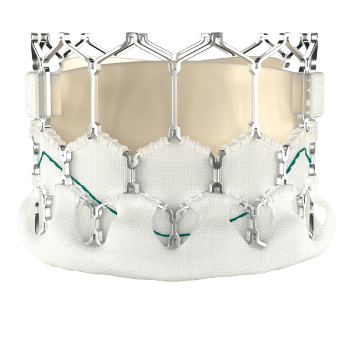
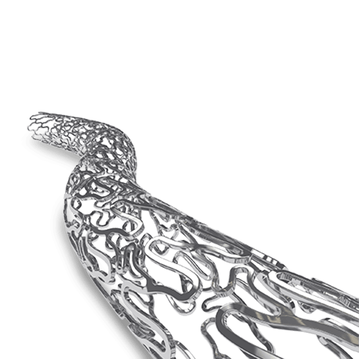
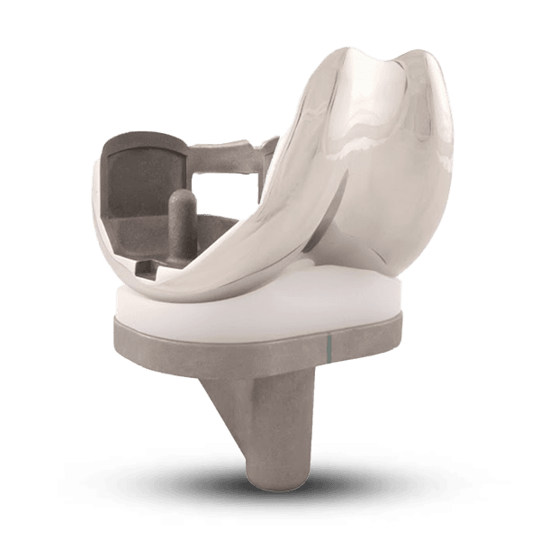
Lotus Med допомагає перейти від назви напряму до конкретної моделі, розміру, комплектації та документів. Номенклатура нижче відображає офіційну лінійку Meril; доступність і реєстраційні матеріали в Україні підтверджуємо окремо для кожної позиції.
Назви й категорії звірені з актуальним каталогом виробника. Для запиту достатньо вказати напрям або назву системи — артикул і конфігурацію уточнимо разом.
Транскатетерні, біологічні та механічні клапанні системи.
Серія балон-розширюваних транскатетерних клапанів. Типорозмір і склад системи узгоджуються за запитом Heart Team.
Запросити позицію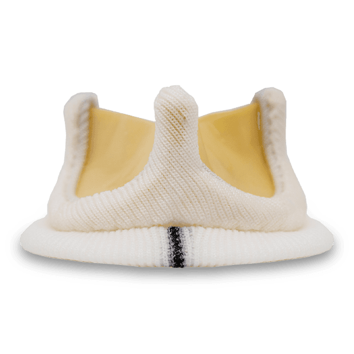
Перикардіальний біопротез для аортальної та мітральної позицій. Розмір і комплектація визначаються клінічною командою.
Запросити позицію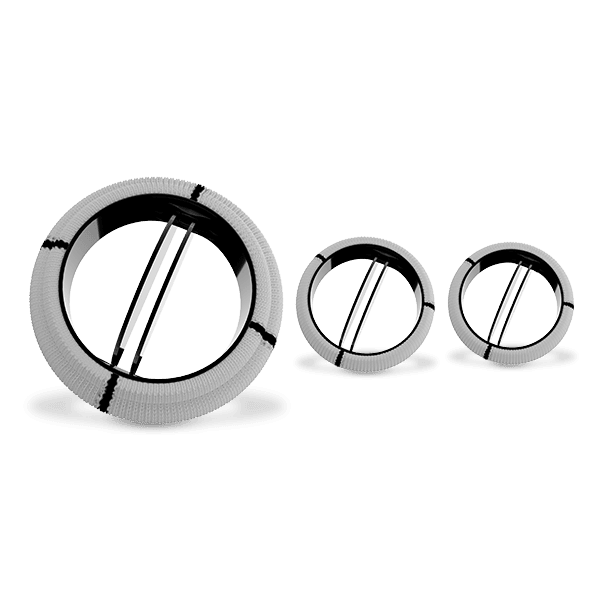
Двостулкова механічна клапанна система для хірургічного протезування. Конкретну позицію звіряємо з актуальною документацією.
Запросити позиціюСтент-системи з лікарським покриттям для різних анатомічних сценаріїв.
Коронарна стент-система з виділенням сиролімусу. Діаметр, довжину та систему доставки уточнюємо для конкретної специфікації.
Запросити позицію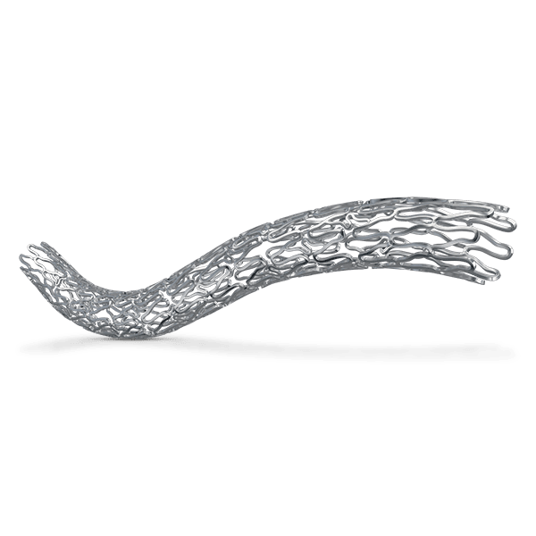
Сиролімус-вивільнювальна система для протяжних і дифузних коронарних уражень із варіантами довжини та діаметра.
Запросити позицію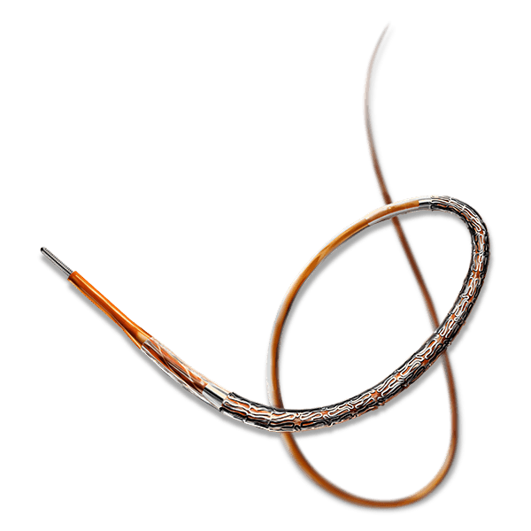
Коронарна стент-система з виділенням еверолімусу та ультратонкими стійками. Специфікацію формуємо за потрібним розмірним рядом.
Запросити позиціюПериферичні стенти та система закриття судинного доступу.
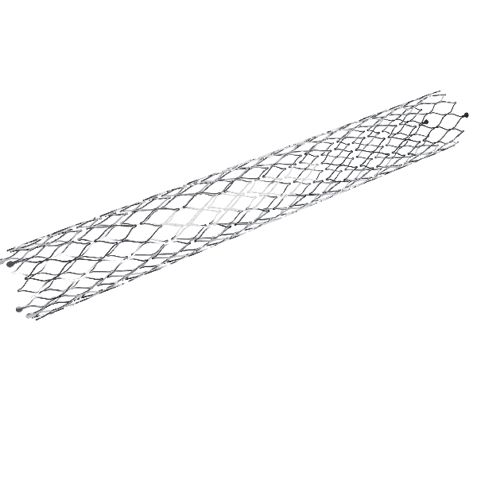
Саморозширювана нітинолова стент-система для периферичного судинного русла. Розмірний ряд уточнюється за запитом.
Запросити позицію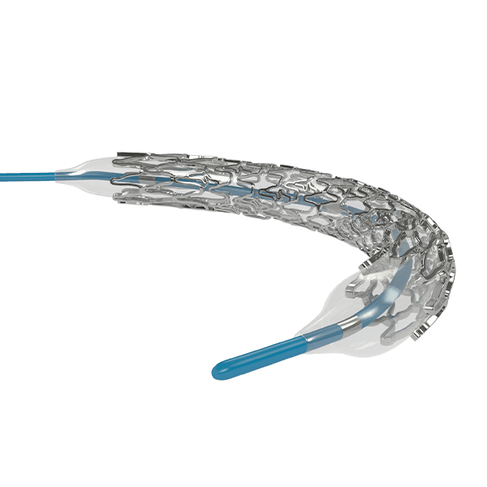
Кобальт-хромова периферична та ренальна стент-система на балонному катетері. Конфігурацію звіряємо з клінічною задачею.
Запросити позицію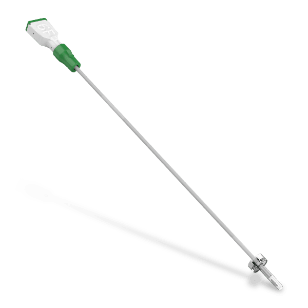
Механічний пристрій для закриття місця пункції стегнової артерії після інтервенційної процедури.
Запросити позиціюКолінні й кульшові системи, а також інтрамедулярна фіксація.
Система тотального ендопротезування колінного суглоба з варіантами компонентів і типорозмірів.
Запросити позицію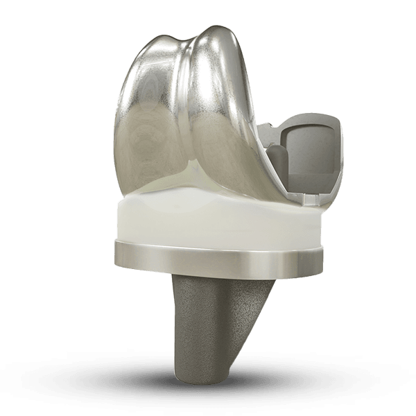
Колінна система з лінійкою феморальних, тибіальних і поліетиленових компонентів для підбору конфігурації.
Запросити позицію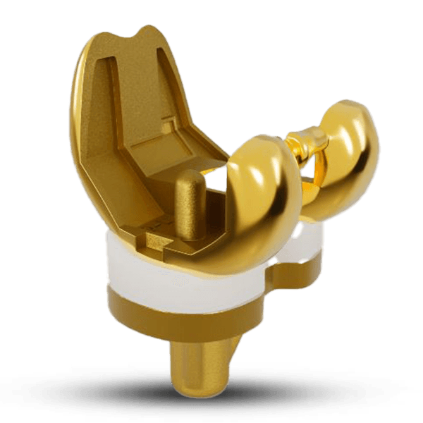
Система тотального ендопротезування коліна, зокрема з варіантами компонентів із покриттям TiNbN.
Запросити позицію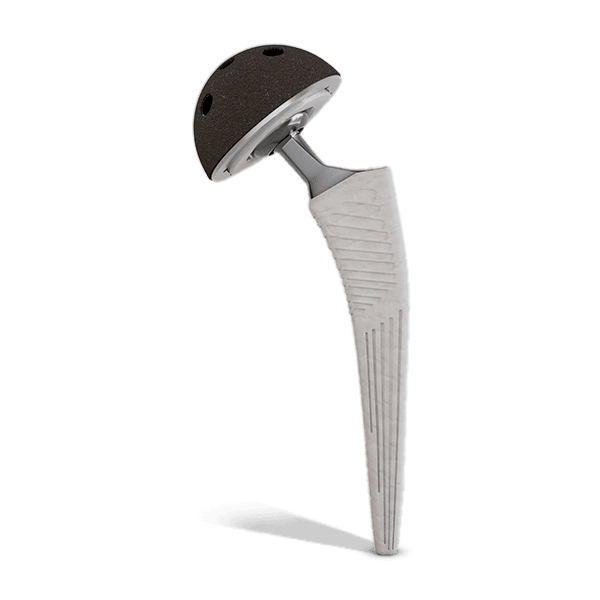
Сімейство компонентів для кульшового суглоба: стегнові ніжки, головки, чашки та біполярні конфігурації.
Запросити позицію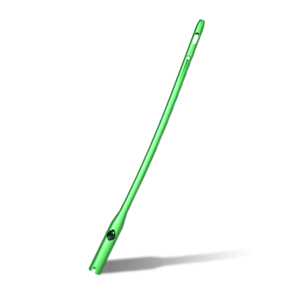
Інтрамедулярна система для фіксації переломів проксимального відділу стегнової кістки.
Запросити позиціюІнформація на сторінці представляє напрямки офіційного портфеля Meril і не означає автоматичну наявність усіх позицій в Україні. Доступність, реєстраційний статус, комплектацію та документи підтверджуємо для конкретного запиту. Остаточний вибір виробу здійснює кваліфікована клінічна команда.
Вкажіть клінічну задачу, назву системи або наявний артикул — звіримо позицію, комплектацію та доступні документи.